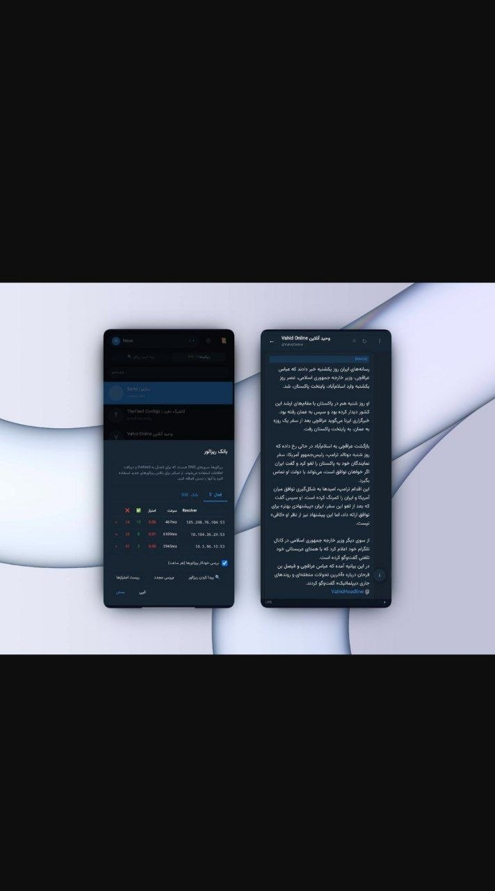

📣در آپدیت جدید theFeed مشکل نمایش بعضی پستها به شکل نظرسنجی برطرف شده، باگ هنگ کردن اپلیکیشن رفع شده و امکان اشتراک کلاینت روی شبکه اضافه شده⚡️
پروژه دفید یه راهکار مبتنی بر DNS برای دسترسی به محتوای کانالهای تلگرام توی شرایط #فیلترینگ شدید اینترنت و مواقعی هست که همه مسیرهای معمول بسته میشن، اما DNS هنوز قابل استفاده میمونه. ایده اصلی اینه که بدون نیاز به اتصال مستقیم به تلگرام، بتونی آخرین پیام کانالهارو دریافت کنی.
سمت سرور (خارج از ایران) به تلگرام وصل میشه و پیامهارو میخونه، بعد اونهارو بصورت پاسخهای DNS از نوع TXT و به شکل رمزنگاریشده در اختیار کلاینت قرار میده. سمت کاربر، کلاینت با تعداد محدودی کوئری DNS میتونه این دادهها رو بازیابی کنه. طراحی سیستم طوریه که مصرف کوئری پایین بمونه و در عین حال در برابر محدودیتها و فیلترینگ مقاوم باشه.
برای اینکه ترافیک قابل شناسایی نباشه، از تکنیکهای مختلف ضد DPI مثل padding تصادفی، تغییر اندازه بلاکها و پخش کردن کوئریها بین resolverهای مختلف استفاده شده. کل ارتباط رمزنگاریشده هست و هر درخواست بصورت مستقل پردازش میشه، تا ردگیری سختتر بشه.
کلاینت یه رابط وب داره که امکاناتش فراتر از فقط خوندن پیامهاست. امکان جستجو بین پیامها، کپی گرفتن از چند پیام، نمایش لینکها، ریپلایها و تا حدی نظرسنجیها اضافه شده. اگر سمت سرور اجازه داده شده باشه، حتی میتونی پیام ارسال کنی یا کانالها رو مدیریت کنی.
یکی از تغییرات مهم نسخههای اخیر، اضافه شدن بانک Resolver مشترکه؛ یعنی دیگه هر کانفیگ لیست جدا نداره و همه resolverها یکجا نگهداری و امتیازدهی میشن، برنامه هم بصورت دورهای اونها رو بررسی میکنه تا بهترینها استفاده بشن. یه اسکنر داخلی هم داره که میتونه رنجهای IP رو بررسی کنه و resolverهای سالم پیدا کنه.
لینک پروژه:🍷
http://github.com/sartoopjj/thefeed/releases/latest
Readme:🔥
http://t.me/PersianGithubMirror/3393
@xsfilterrnet 👑
@ircfspace 💎
Download photo_2026-04-27_11-00-12.jpg{kind=link}